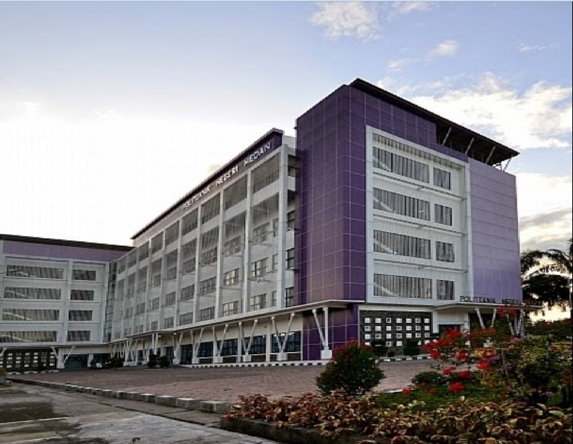

Nama: Nixon Thadeus Gulo
Nim: 210709010
Disini saya akan menyediakan beberapa jenis perpustakaan, berikut:
1. Perpustakaan politeknik Medan
Perpustakaan politeknik Medan adalah Lembaga Pemerintah Nonkementerian yang melaksanakan tugas pemerintahan dalam bidang perpustakaan yang berfungsi sebagai perpustakaan Universitas, perpustakaan rujukan, perpustakaan deposit, perpustakaan penelitian, perpustakaan pelestarian, dan pusat jejaring perpustakaan, serta berkedudukan di ibu kota negara. Gedung Fasilitas Layanan Perpustakaan polmed berlokasi di Jl. Almamater No. 1, Gedung P Lantai 2, Politeknik Negeri Medan, Kampus USU, Medan.
Berikut tautan:Perpustakaan polmed
2. Perpustakaan Universitas Sumatera Utara

Sejarah Perpustakaan dimulai dengan berdirinya Universitas Sumatera Utara (USU) pada 20 Agustus 1952. Perpustakaan pertama yang didirikan di lingkungan USU adalah Perpustakaan Fakultas Kedokteran (1952) dan kemudian disusul oleh Perpustakaan Fakultas Hukum (1954). Ketika itu USU masih bernaung di bawah Yayasan Universitas Sumatera Utara, yang kemudian diresmikan menjadi perguruan tinggi negeri ketujuh di Indonesia pada 20 Nopember 1957. Perpustakaan Universitas memiliki tugas untuk menunjang kegiatan Tri Dharma yaitu pendidikan dan pengajaran, penelitian, dan pengabdian kepada masyarakat. Untuk alamat Universitas berada di jalan l. Perpustakaan No.1, Padang Bulan, Kec. Medan Baru, Kota Medan, Sumatera Utara. Perpustakaan Universitas Sumatera Utara mempunyai aplikasi mobile dengan nama USULIB Mobile bisa dapatkan di Playstore.
Berikut tautan:Perpustakaan Universitas Sumatera Utara
3. Perpustakaan Bung Hatta

Perpustakaan nasional indonesia adalaah perpustakaan pusat yang dimana perpusnas embaga Pemerintah Nonkementerian yang melaksanakan tugas pemerintahan dalam bidang perpustakaan yang berfungsi sebagai perpustakaan pembina, perpustakaan rujukan, perpustakaan deposit, perpustakaan penelitian, perpustakaan pelestarian, dan pusat jejaring perpustakaan, serta berkedudukan di ibu kota negara Perpustakaan berada pada Jalan Medan Merdeka Selatan Nomor 11, Gambir, Kecamatan Gambir, Jakarta Pusat.
Berikut link:UPT Perpustakaan nasional indonesia